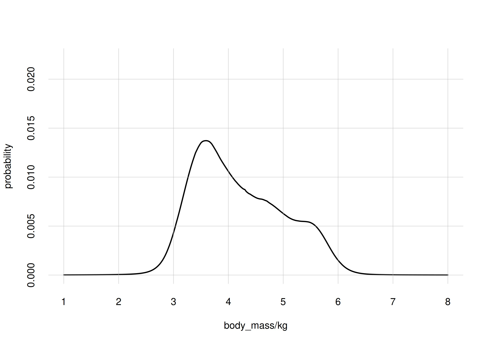
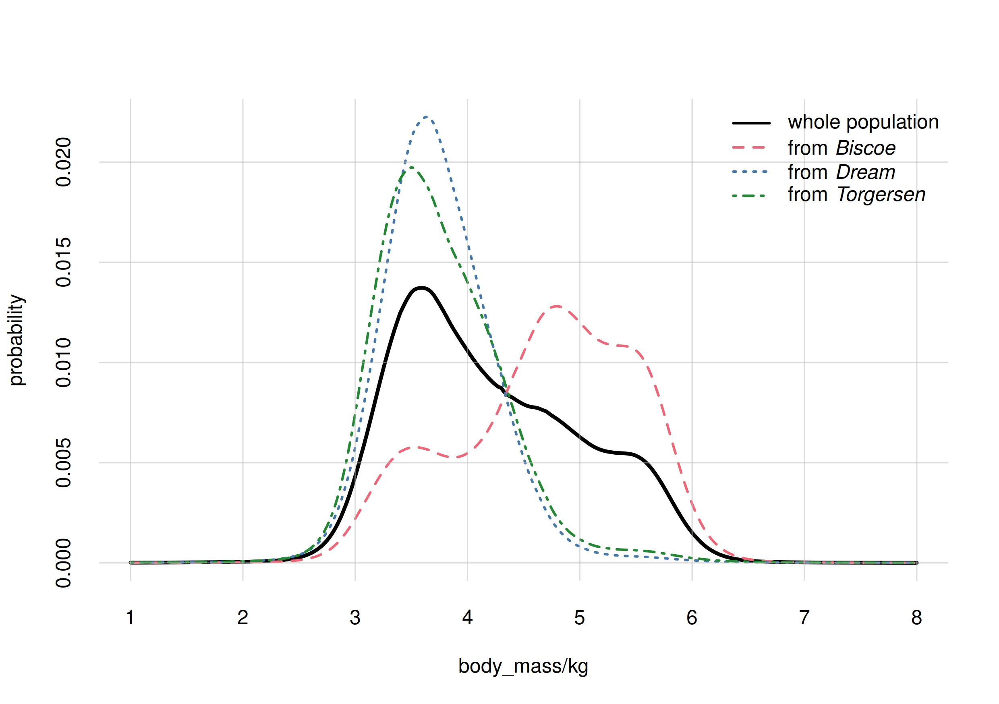
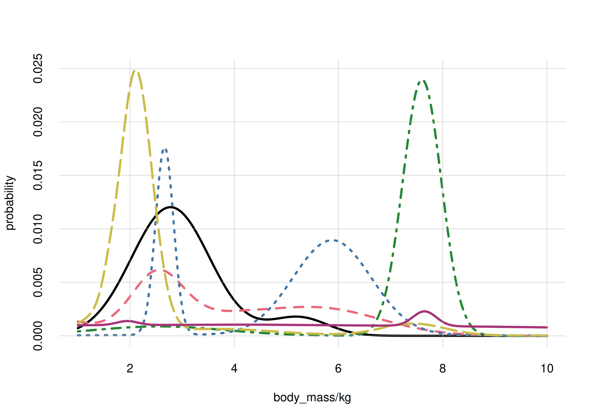
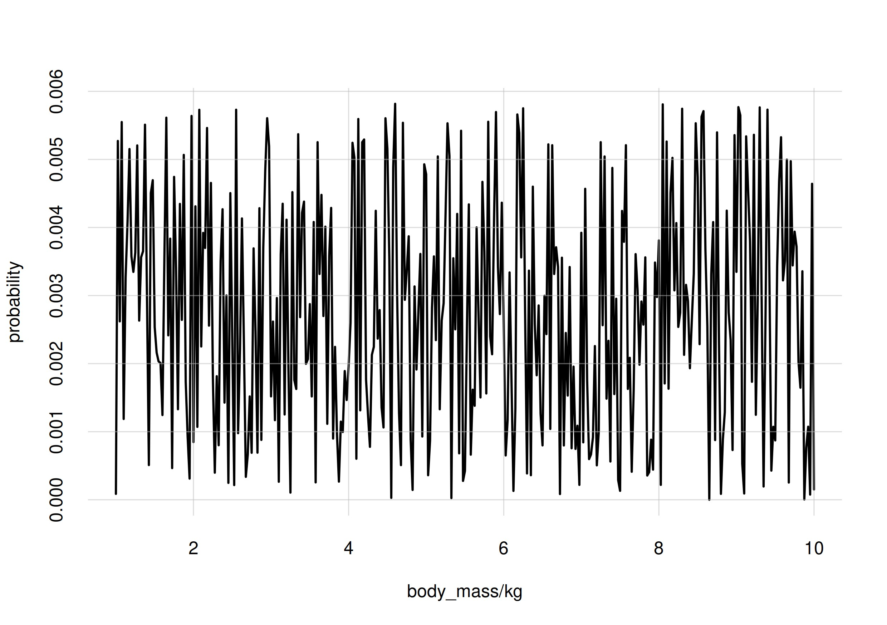
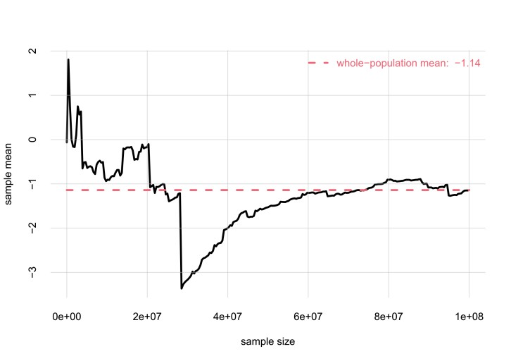

A crash course in population inference
Source:vignettes/vignette_crashcourse.Rmd
vignette_crashcourse.RmdThis vignette gives a summary of what Inferno is about, and the kind of inferences it allows you to do; a sort of crash course in population inference, also called exchangeable inference. Its main purpose is to clarify, by means of examples, the terminology used in this package.
It is of course impossible to summarize this branch of probability theory and of statistics in a couple of sections; you’re invited to learn more for instance from the ADA 511 course, or from texts such as Bernardo & Smith’s Bayesian Theory (2000) (especially §§ 4.3, 4.4, 4.6), or Jaynes’s Probability Theory (2003) (esp. ch. 9); take also a look at Lindley & Novick The role of exchangeability in inference (1981).
Population inferences
A very common type of inference is the following. We have a large or potentially infinite group of entities, each having a set of characteristics. Having checked the characteristics of several entities from this group, we want to make guesses about the characteristics of new entities from the same group.
The description just given is very generic or even vague. Indeed it can be applied to a huge variety of situations.
- The ‘entities’ could be: objects, like electronic components; or people, or animals, or plants, or events of some kind.
- The characteristics could be: the material the object is made of, and the result of some test made on it; or the age, blood-test results, and disease condition of the person; or the species and body mass of the animal; or the length of the petals of the flower.
- The group could be: electronic components coming out of a particular production line; or people of a given nationality and with given symptoms; or animals from a particular island; or flowers of a specific genus or family.
The possibilities are endless.
Also the kinds of guesses that we want to make can be very diverse. We might want to guess all characteristics of a new entity; or, having checked some characteristics of a new entity, we want to guess the ones that we haven’t or can’t check. Important examples of this kind of inference appear in medicine. For example we may have a group defined as follows:
- Group: people from a given nationality, suffering from one of two possible diseases.
And we may consider these characteristics:
- Characteristics: age; sex; weight; presence or absence of a particular genetic factor; symptoms from a specific set of possible ones; results from clinical tests taken at different times; kind of disease.
We observed as many as possible of these characteristics in a sample of people from this group. Now a new person from the same group appears in front of us. We check this person’s age, sex, weight, symptoms. We need to guess which of the two diseases affects this person.
The kind of inference summarily described above has one important
aspect. Suppose you have collected a sample from your group of interest,
and you want to use this sample to make guesses about new entities from
the same group. If someone exchanged one entity in your sample with
another one unsystematically chosen from the group, then you
wouldn’t protest. After all, you still have the same number of samples
from the same group. This aspect is called
exchangeability: we say that this kind of inference is
exchangeable. There are kinds of inference for which this aspect is not
true. For example, suppose you’re given some stock data from four
consecutive days, and you want to make guesses about the next day. If
someone replaced any of your four datapoints with a datapoint an
unsystematically chosen other day of the year, then you would protest:
the time order of the datapoints matter. This is an example of
non-exchangeable inference.
The inferences for which inferno is designed are exchangeable ones. We shall also call them population inferences.
Having discussed these simple examples, let’s agree on some more
standard terminology. Let’s call:
- Population: what we’ve called ‘group’.
- Unit: what we’ve called ‘entity’ – the object, person, animal, etc.
- Variate: what we’ve called ‘characteristic’.
Probability and population frequencies
We have been speaking about “making guesses”; but what does this mean?
When a unit is chosen unsystematically from a population, it’s only
in rare situations that we may be sure about the variates of this unit
before checking them. Suppose for instance that the population of
interest is ‘all adults from a given country’; and the variates of
interest are sex, weight, height.
If a person is chosen from this population, we can’t be sure beforehand
of how tall this person will be. We can exclude values like 4 m or
20 cm, but we’ll be uncertain about many other possible values. Even if
someone tells us the sex and weight of this person, we’ll still be in
doubt, but maybe we can consider some values more probable than
others.
That’s the keyword: probability. Although we are unsure about a variate of a unit, we can still find some values more probable than others: we may consider it more probable that the person is 160 cm tall than 180 cm tall; or in a clinical inference we may consider it more probable that the patient has a particular virus than not.
Probability is our degree of belief about the value of the unknown variate.
Note that probability is not a physical property of the unit. For instance, the person in question may be exactly 158 cm tall; the probability of being 180 cm tall is not something we can “measure” from the person. Also, if we found out some other variate of the person – say we knew the weight, and now we know also the sex – then the probability we assign to 180 cm may increase or decrease; but the person is exactly the same as before. Probability is not a property of the population either. For instance, for one person from a population we may think 150 cm to be the most probable height, but for another person from the same population we may think 180 cm to be the most probable height instead.
Probability expresses the information we have about the variate of a unit. This is why another researcher may have a different probability about the same unit: because they may have different information about that unit.
There is a situation in which we would all agree about the probability
about a variate of a unit: when we know the frequencies
for that variate in the population. Suppose for instance that the
population of interest is that of penguins who lived in particular
locations in some particular years (penguins from other locations or
other times are not part of this population). The variates are the
penguins’ species and the island they lived
in.
You’re told that, as a matter of fact, 43.7% of penguins from the whole population are of species Adelie, 20.0% of species Chinstrap, and 36.3% of species Gentoo. Now a penguin from that population is brought in front of you, but you can’t see any of its characteristics. What’s your degree of belief that this penguin is of species Adelie, or Chinstrap, or Gentoo? We’d all agree, given the frequency information about this population, to assign the probabilities of 43.7%, 20.0%, and 36.3% to the three possibilities, for this penguin. We write this as follows: On the left side of the ‘’ bar we write what we’re guessing or are unsure about. On the right side, we write the information that led to our probability assignment; in this case, the information about the full population. When the information behind a probability is understood, the ‘’ bar and the right side are usually omitted.
In this case, the highest probability is for the Adelie species, but the other two possibilities cannot be excluded. The numerical values of these probabilities are extremely important, because they determine any kind of decision we may have to make about our unit. This is especially true in medical decision-making, where probabilities, combined with utilities, determine which is the best choice that a clinician can make. Medical and clinical decision-making, and the role of probabilities in them, are discussed for instance in the texts by Sox & al.: Medical Decision Making (2024), by Hunink & al.: Decision Making in Health and Medicine (2014), or by Weinstein & Fineberg Clinical Decision Analysis (1980).
The example with the penguin population can be analysed further. The
penguins in this population come from three possible
islands: Biscoe, Dream, and
Torgersen. Therefore a penguin can be of one of three species
and from one of three islands, for a total of 3 × 3 = 9 possibilities.
You’re told that, as a matter of fact, the frequencies of these nine
combinations in the whole population are as follows:
| Adelie | Chinstrap | Gentoo | |
| Biscoe | 12.6% | 1.8% | 34.0% |
| Dream | 17.4% | 16.5% | 1.4% |
| Torgersen | 13.8% | 1.6% | 0.9% |
Then we’d all agree that the probability that the penguin brought to
us is of species Gentoo and from
island Biscoe would be 34.0%:
Inferno allows you to calculate probabilities
of this kind, for any set of variates of your choice.
Learning from known variates
But there’s even more interesting information in the population frequencies above. Let’s focus on Biscoe island. With a quick sum we see that 48.4% of the whole population comes from Biscoe island (thus we’d assign a probability of 0.484 that our penguin comes from that island). Dividing the frequencies above, row-wise, by the frequencies of the respective islands (the sums of each row), we can find the frequency of each species for each particular island:
| Adelie | Chinstrap | Gentoo | |
| from Biscoe | 26.03% | 3.72% | 70.25% |
| from Dream | 49.29% | 46.74% | 3.97% |
| from Torgersen | 84.66% | 9.82% | 5.52% |
We call these conditional frequencies, and we call
the group of penguins that come from island
Biscoea subpopulation of the whole population.
The table above reports the frequencies of the three
species in each subpopulation.
Thus we also know, for instance, that 70.25% of penguins in the
subpopulation from island Biscoe are of
species Gentoo. This species is the majority in
that subpopulation – contrast this with the majority in the whole
population, which we saw was Adelie. Indeed, your most probable
guess about the species of the penguin in front of you was
Adelie, with 0.437 probability.
But suppose now someone tells you that this penguin comes from
island Biscoe (so this variate is now known to
you). Given this new piece of information, which probabilities do you
assign to the species of this penguin? Obviously 0.2603 for
Adelie, 0.0372 for Chinstrap, and 0.7025 for
Gentoo. We write this as follows:
The right side of the
‘’
bar now reports the extra information that the penguin comes from
island Biscoe. We say that our probability has
been updated, and we call it a conditional
probability.
Learning about the penguin’s island not only made you
change the highest probability assignment from Aelie to
Gentoo, but it also increased the value of the highest
probability. Without knowing the penguin’s island,
Adelie had slightly less than 50% probability; it was as likely
as not. After learning the island variate, Gentoo
gets more than 70% probability.
An analogous discussion can be made for a continuous variate. Let’s
for instance take the body_mass of the penguins,
discretized in steps of 0.025 kg. Suppose we knew that the histogram of
body masses in the whole population were as follows:

Then, if you had to guess the body mass of the penguin brought to you, you’d give the value 4 kg (plus or minus 0.0125 kg) a probability of around 1%, and so on for other possible values; the most probable value being 3.6 kg at 1.4% probability.
Suppose you’re now given also the histograms for the subpopulations from the three islands:

Upon learning that your penguin is from Biscoe, your degree
of belief would change: the most probable value would be 4.8 kg at 1.3%
probability. Note how the histograms for body_mass are
different in the subpopulations of the three islands. In
Torgersen, for instance, it’s more probable to find penguins
between 3 kg and 4 kg than between 5 kg and 6 kg; whereas in
Biscoe the opposite is true.
This is exactly the kind of learning situation that takes place in medicine and in clinical inferences. A clinician searches for symptoms because they may change and increase the probabilities of different diseases or health conditions. The reason why clinicians research particular subpopulations – particular demographics, or genetic factors, etc. – is that within these subgroups the probability that a medical condition exist or will occur can be drastically higher. In turn, this leads the clinicians to understand better what can be the biological relationships between the health condition and those factors.
Inferno allows you to calculate the updated
probabilities of any set of variates, conditional on any other set.
Uncertainty about whole populations. Population samples
Inferences are therefore quite clear if we know the frequencies of the variates for the whole population. Our main problem is that we usually don’t know those whole-population frequencies. For example, do you know the exact number of people, among those born in your country at any time and are alive today, who are exactly between 165 cm and 170 cm tall today?
For our penguin example, let’s consider again the
body_mass variate. We actually don’t know what the
histogram of this variate over the whole population looks like. It could
have one or several peaks, a symmetric or non-symmetric shape,
shoulders, an so on. Here are seven possibilities:

It’s often impractical or impossible to measure the frequencies of a
variate in a whole population. We must therefore guess
them.
In order to guess them, we usually examine a sample from the population of interest. This sample is chosen in an unsystematic way, so that its statistics and its sample frequencies are not affected by peculiar choices, otherwise we would have a biased sample (imagine for instance choosing a sample of male penguins only, whereas the penguin population we’re interested in has both males and females).
But the frequencies of variates in a sample from a population are
typically different from those in the whole population. The difference
is the larger, the smaller the sample. For example, if we chose five
penguins from our penguin population in an unsystematic way, it could
happen that we got five penguins all of species Gentoo. Then
the variate species would have frequencies of 100% for
Gentoo and 0% for Adelie and Chinstrap. But
of course this would not mean that only the species Gentoo
occurs in the whole population. In order to reflect the frequencies in
the whole population, the size of a sample needs to be larger, the
larger are:
- the numbers of variates considered;
- the possible values of each variate.
Therefore, to guess the frequencies in the whole population we can examine a sample from it – but we cannot fully rely on the sample.
The traditional way of facing this uncertainty was to assume that the whole population has frequencies with particular features; most commonly, they were assumed to be Gaussian. The variate values observed in the sample were used to fit the free parameters of the particular assumed distribution, like the means, variances, covariances of the Gaussian.
Consider how drastic such an approach is. It can also be misleading, if one is not aware of what is being done. For instance, errors can be reported about the fit of the free parameters, and if they are small they can give a false sense of precise inference. But the very assumption has errors, which may be quite large; and such errors are rarely reported.
One could object that the assumption, say of gaussianity, behind such methods is not completely arbitrary: one can get the idea of whether it’s correct or not by looking at the sample. But this objection is self-contradictory: as discussed, our problem is that the frequencies in the sample are not a faithful reflection of those in the whole population. We’re making assumption because the sample is not reliable, so how can we rely on the sample to judge those assumptions?
It must be pointed out that even methods or measures that do not explicitly refer to peculiar assumptions about frequencies, do actually rely on such hidden assumptions. Pearson’s measure of correlation, for instance, actually relies on the assumption that the joint frequency distribution for the whole population is Gaussian.
Bayesian nonparametric population inference
The method based on the assumption of peculiar frequency distribution was a necessity in the past, because there was no other computationally feasible way of facing the uncertainty about the whole population. But today the situation is different.
Instead of making peculiar assumptions out of computational desperation, today we can explicitly recognize our uncertainty about the frequencies in the whole population, and therefore account for the errors that can come from this uncertainty. This is what Bayesian nonparametric population inference does. The term ‘nonparametric’ means that no peculiar assumptions are made about frequency distribution having simple shapes (and therefore expressible with few parameters).
Since we must guess what the frequencies are in the whole population, we proceed by assigning probabilities to all possible such frequency distributions. Intuitively, a candidate frequency distribution is more probable:
- the more it fits the frequencies measured in the sample;
- the more it looks “natural”.
An example of unnatural or strange probability distribution, for our
body_mass variate, could be the following:

It seems quite unnatural based on our experience with histograms over
large natural populations. If a sample from a penguin population showed
this frequency distribution of body_mass values, you would
probably check whether any errors were made during the sampling.
The core of the inferno package is the
calculation of the probabilities for the possible frequencies of the
whole population, and the selection of a large sample of the most
probable ones. This calculation and sampling are realized by the
learn() function.
Back to guessing about the next unit
There are situations in which it is not possible to choose the sample in an unsystematic way. Yet such a biased sample can still be used for population inference, as long as we know what its bias may be. Inferno allows you to make this kind of bias corrections as well.
But the frequencies of variates in a sample from a population are typically different from those in the whole population. The difference is the larger, the smaller the sample. There are even extreme situations in which some statistics from a sample, like the mean, can be way off those of the whole population, even if the sample is large (the statistics become reliable only when the sample is almost as large as the full population). The plot below shows an example. The variate is a real number that can take on positive or negative values, in a population of 100 000 000 units; the mean value of the variate in the whole population is . The plot shows the values of the mean obtained from unsystematically chosen samples of various sizes. Even in a sample of 30 000 000 units we may observe a mean of . The median of a sample is much more reliable.

The point of this example is only to make clear that although a sample from a population gives us some information about the whole population, we are still uncertain about the whole-population frequencies.
(TO BE CONTINUED)